PianoBox
Plug a USB-MIDI keyboard into a Raspberry Pi with a touch screen and it boots straight into an instrument: a sampled grand piano, a sampler with a real record button, an analog-style synth, an eight-layer song recorder with a mixer and effects, and a chord trainer built around the circle of fifths. Every control is a big, plainly labelled button or fader on a dark screen. There is no mouse, no typing and no menu tree deeper than one tap.
The point is not a toy piano. It is a small studio a child can actually run, where recording a sound, cutting it up, putting it on the keys, layering a song and hearing what a compressor does are all one finger away. The engine is written in Rust and runs on a 512 MB Pi Zero 2 W.
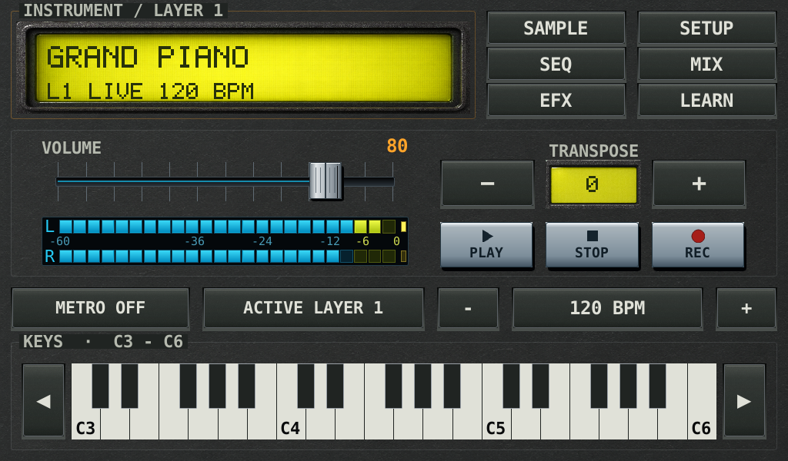
The home screen. The display names the sound, the keys light up as you play, the meter shows how loud you are. Transpose moves every note, PLAY / STOP / REC are the tape deck for your song, BPM sets one tempo for everything. Six big buttons lead to the other pages.
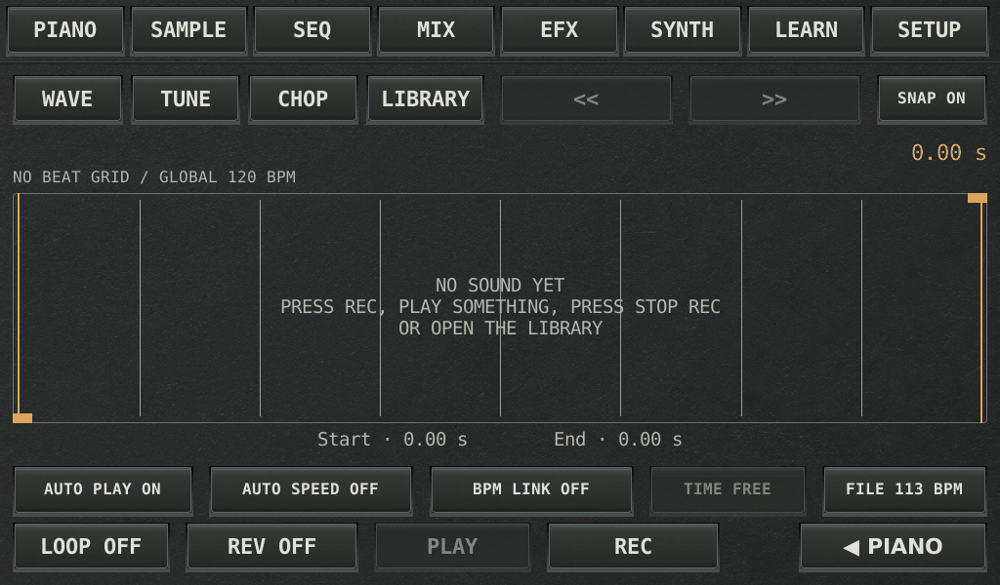
Press REC, play something, press STOP REC. The take is saved and opens as a new sound you can play on the keys. This is where "sampling" stops being a word and becomes a thing you did.
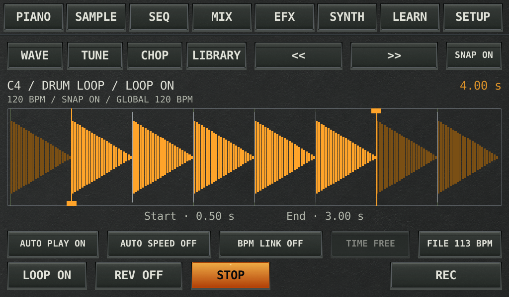
Drag Start and End to keep the part you like; cuts snap gently to detected beats and to zero crossings so nothing pops. LOOP repeats it, REV plays it backwards, TUNE shifts it, AUTO SPEED fits a loop to the song tempo without changing its pitch.
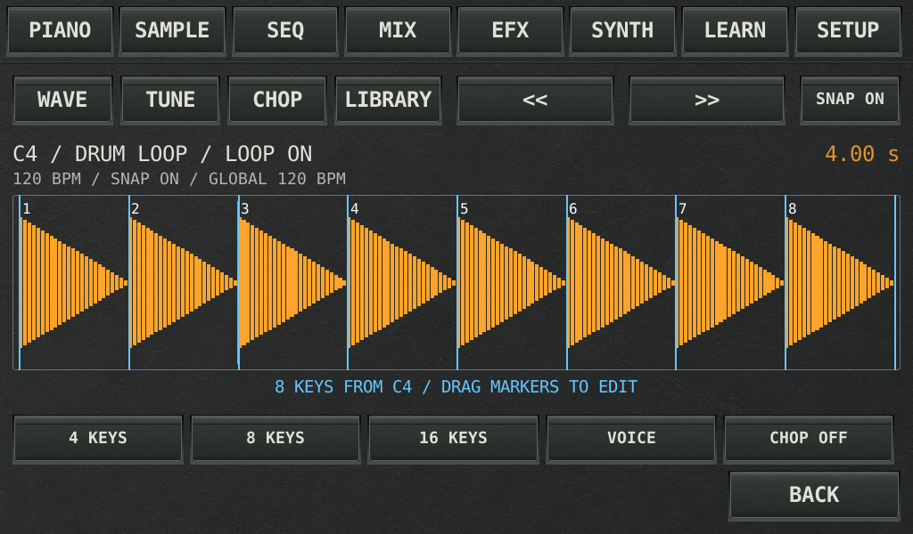
Cut a loop into 4, 8 or 16 pieces and they land on the keys from C4. Play the pieces in any order, drag a marker to move a cut. A beat becomes an instrument.
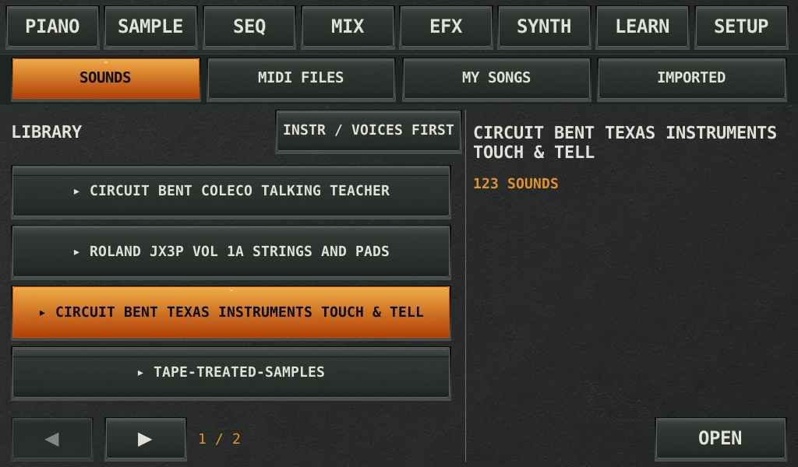
Folders of sounds, your recordings, and a star for favourites. New sounds arrive from a USB stick through SETUP › ADD SOUNDS / USB: each folder with WAV files becomes a library folder.
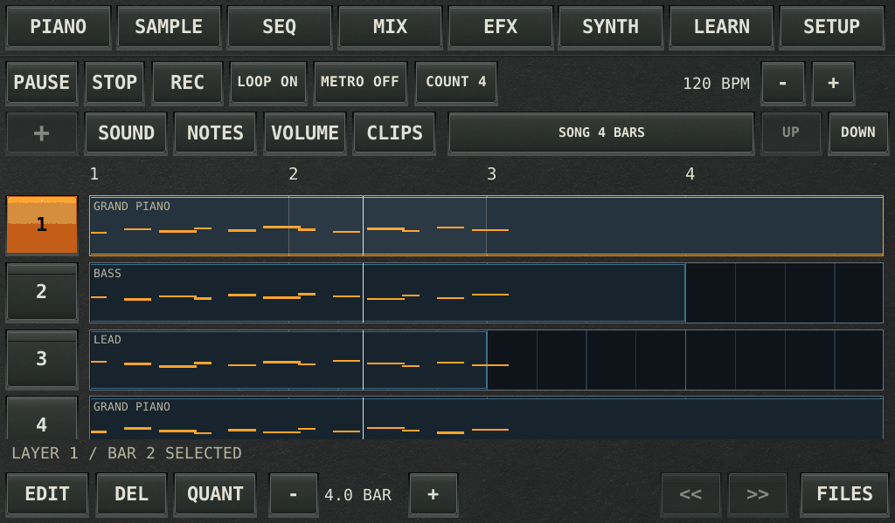
Up to eight layers, each with its own instrument. Four clicks count you in and your playing lands on the timeline. LOOP repeats, METRO clicks (also while you just rehearse), QUANT pulls notes onto the beat.
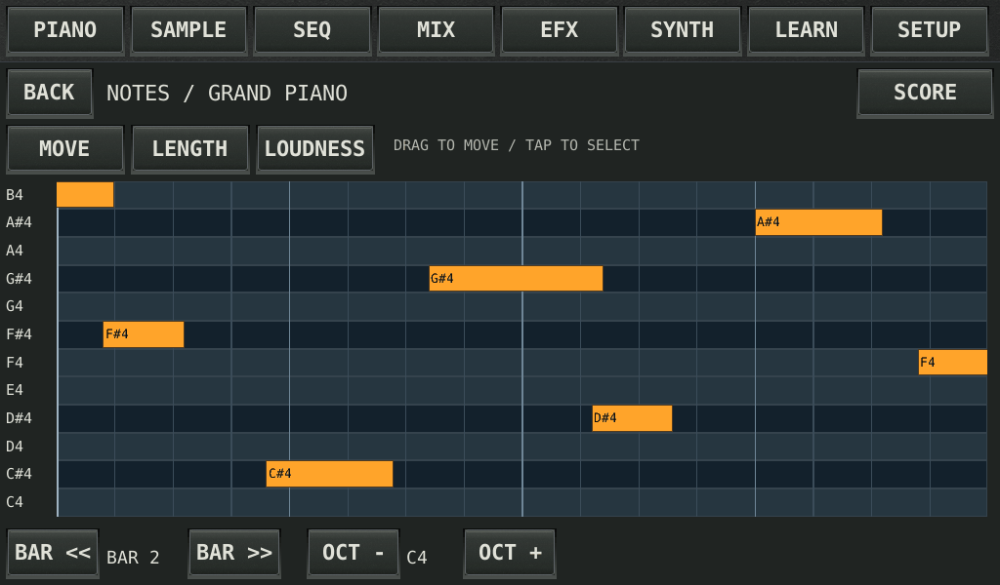
Tap a bar to see what you played. Drag a note to move it, make it longer or louder, or switch to SCORE to see the same notes as sheet music. In EDIT mode, hold a bar for a small menu under your finger: copy, paste, split, delete, re-record, or a new empty bar.
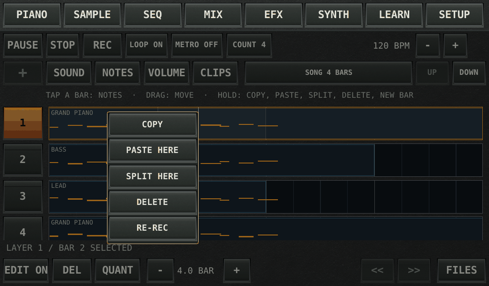
Drag a bar to move it. Hold it and a small menu opens right under your finger: copy, paste here, split here, delete, re-record. Hold an empty spot for PASTE HERE or a NEW BAR to record into. Cuts, moves and pastes close to a bar line land right on it.
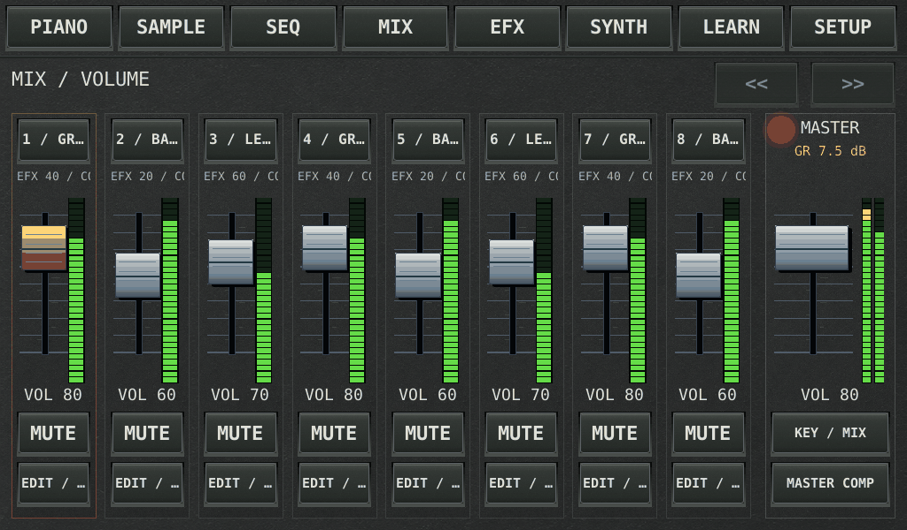
One fader per layer, mute buttons, effect and compressor sends, a chain of up to three effects in series per layer, and a master strip. Green bars show the level, yellow means loud, and a red LED on the master strip glows when the little computer is asked for too much at once. The first lesson in balance.
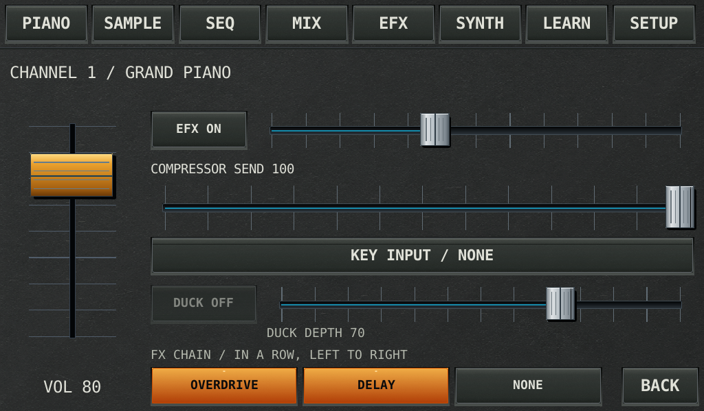
One layer up close: its level, how much goes to the effect and the compressor, a side-chain key with ducking, and an FX CHAIN of up to three effects in a row that belong to this layer only.
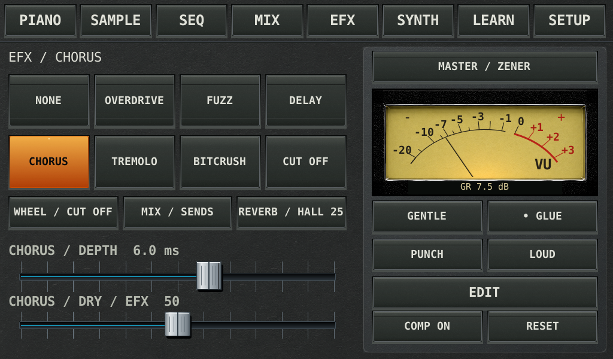
Eight pedal-style effects with three knobs each, a reverb that can be a hall, a boingy spring or a three-head tape echo, and a dry/wet fader. Tap an effect to hear it, tap again to turn its knobs. On the right, a master compressor with a moving gain-reduction needle in four classic flavours.
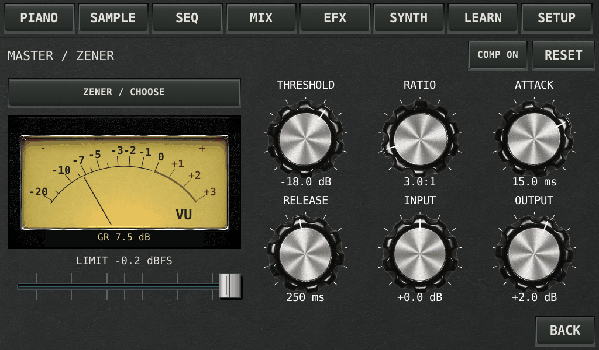
Threshold, ratio, attack, release, in and out, plus GENTLE / GLUE / PUNCH / LOUD presets. Watching the needle while you play is how "compression" turns from jargon into a feeling.
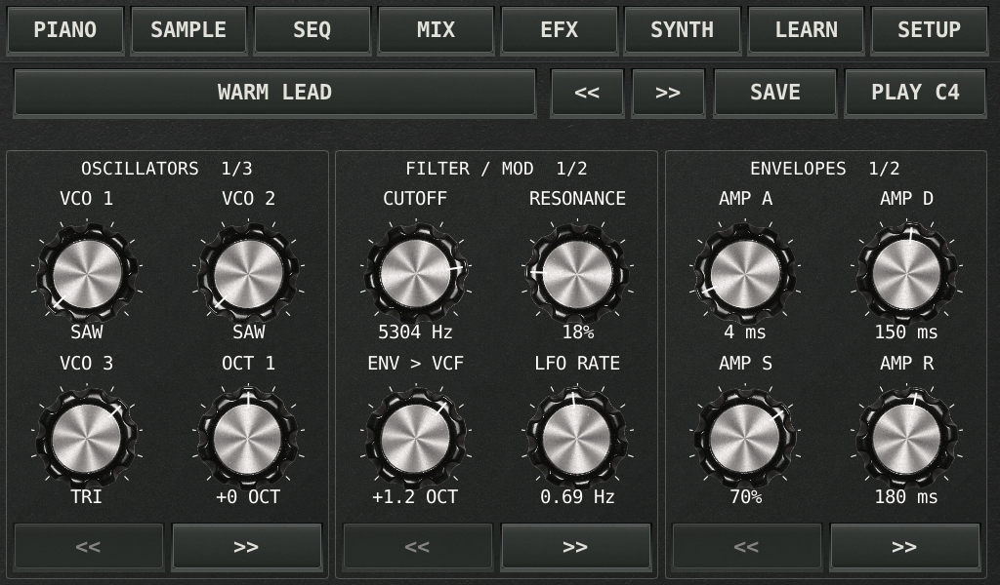
Three oscillators, noise, a resonant filter, two envelopes and an LFO. Start from a preset, turn knobs, hold PLAY C4 to hear it without a keyboard, SAVE to keep your sound. Each song layer can carry its own patch.
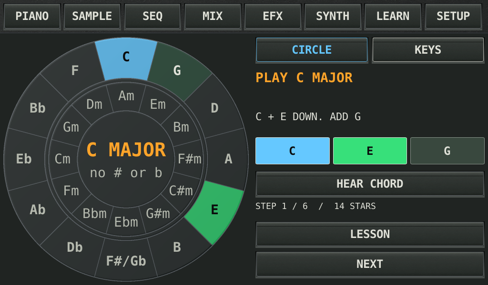
Tap a key on the circle of fifths. Blue is the root, green keys are the chord. Hold it right and the screen flashes and you earn a star. Lessons go from simple chords to progressions to Twinkle; the KEYS view shows the same thing on a piano.
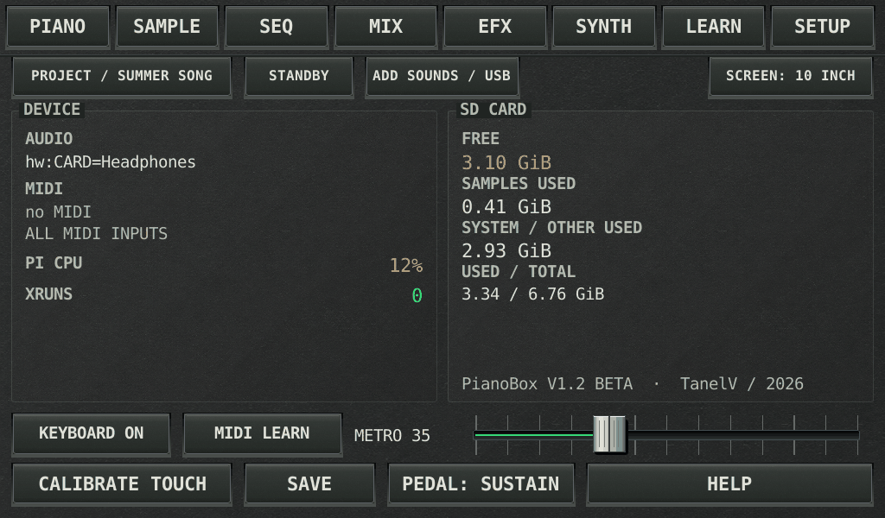
Screen size (auto-detected), what the pedal does, metronome level, standby, touch calibration, adding sounds from USB, and live audio and CPU figures for the grown-up.
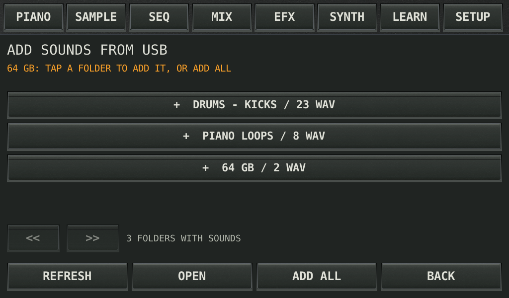
Plug in a stick, tap OPEN, and every folder that holds WAV files is listed with its count. Tap one to add it as a library folder, or ADD ALL. Nothing is ever overwritten.
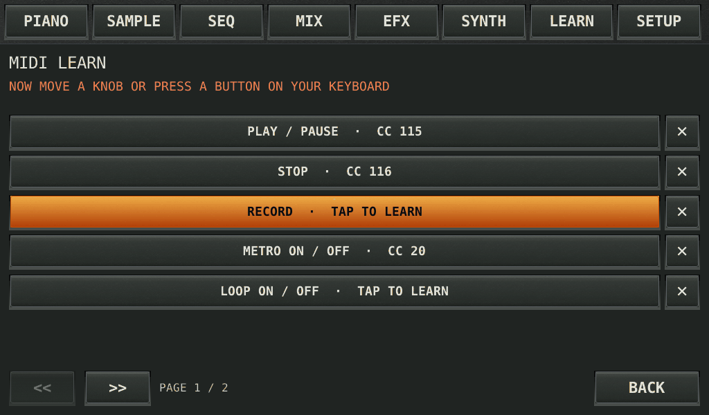
Tap an action, then move a knob or press a button on the keyboard: play, record, metronome, loop, layer, tempo, effect bypass, reverb, mix. The pair is remembered; piano keys are never stolen.
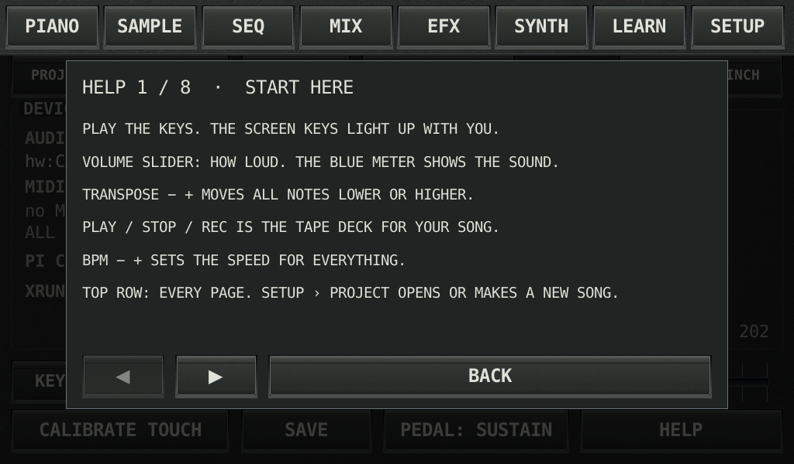
Eight short pages, one per screen, written for a child: what each button does and why. Reachable from SETUP at any time.
- ■Sound is something you can hold. Record it, look at its waveform, cut it, reverse it, put it on a key.
- ■Rhythm has a grid. Count-in, metronome, bars and quantize make the beat visible before it is explained.
- ■Songs are layers. A bass, a chord, a melody, a beat: each on its own lane, each with its own fader.
- ■Harmony has a shape. Neighbours on the circle of fifths sound good together, and the chord trainer rewards getting it right.
- ■Engineering words become knobs. Cutoff, envelope, reverb, compression and limiting are all things you turn and hear.
- ▶Rust, one binary. Lock-free audio thread, ALSA output, MIDI via midir, UI in Slint rendered either by the GPU (desktop) or a software renderer straight to the Pi framebuffer (kiosk).
- ▶Original DSP. Disk-streamed velocity-layered piano (Salamander Grand, CC-BY), de-clicked sampler with slicing, three-oscillator synth, eight effects, four compressor topologies, a stereo-linked lookahead limiter, Rubber Band time-stretch for tempo-matched loops.
- ▶Crash-safe files. Songs, settings and presets are written with fsync-and-rename, with a backup that is actually read back if the power goes.
- ▶Tested headless. A harness compiles the real Slint screens at six panel sizes, taps every control and asserts the callback fired; audio gates check pitch, duration and level without a sound card.
- ▶Installers. One script each for a Raspberry Pi, an Ubuntu/Debian desktop and macOS (UI and MIDI only there), plus a cross-build script for the Pi Zero 2 W.
git clone https://github.com/piksliviksi/PianoBox ~/pianobox cd ~/pianobox bash deploy/install-pi.sh --samples sudo reboot
bash deploy/install-ubuntu.sh --samples
bash deploy/install-macos.sh
The piano bank is the 1.9 GB Salamander Grand Piano (CC-BY 3.0, Alexander Holm); everything else works without it. Full manual: docs/reference.md in the repository.